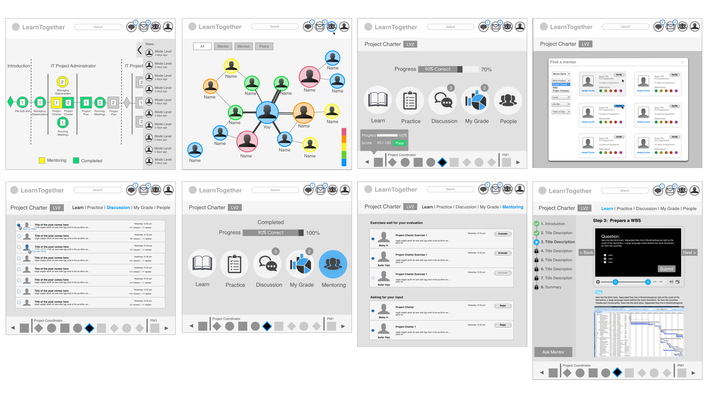
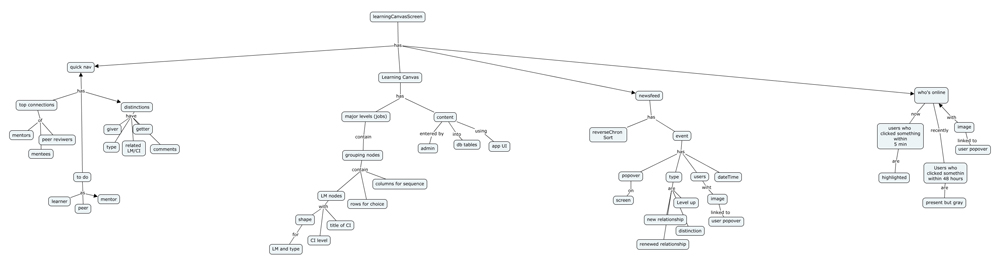
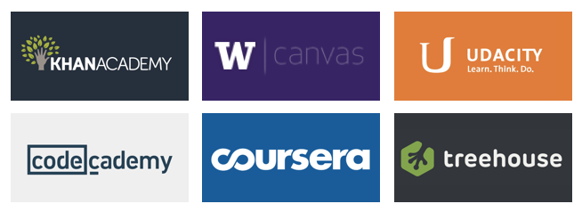
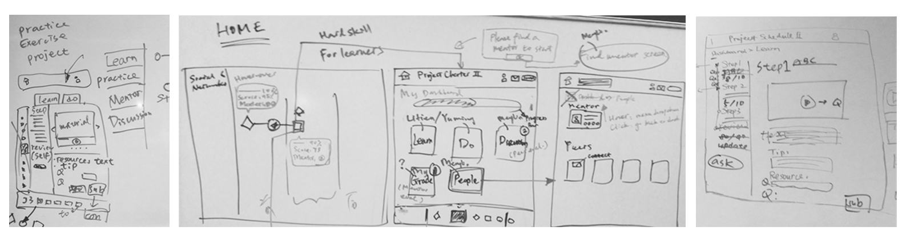
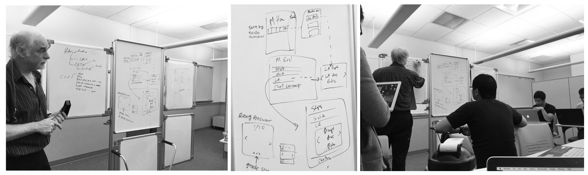

Intentionally grow and connect your staff
LearnTogether is a University of Washington startup venture led by Information School Professor Bob Boiko and the major client is Costco. I was the first and sole designer in the team and established the platform foundation from zero to one with the founder. LearnTogether solves the problem that company is disproportionately staffed with beginner to intermediate level employees by creating a Learning and Networking Management System (LMS).
The goal is to replace ineffective “old school” corporate training with next generation learning techniques and social networking features to let a group of related professionals learn together, and ensure the training spend matches the department benefit. The vision is to build a foundation that can overcome any learning challenges and build a marketplace of various learning content for enterprise.
UI/UX Design
Focus Group, Content Strategy, Concept Map, Sitemap, User Flow, Wireframe, Prototype
Oct 2014 - Jul 2015
In the 6 user sessions, I started with observing how our target users, Project Managers in Costco, negotiate and make a “contract" between teaching and learning. Later on, I translated concepts into features that address user behaviors and motivations. I drafted wireframes, presented to users, and then quickly refined them based on feedbacks.
As product owners do not have all the information they need to prioritize the features, we defined the Red Routes for MVP and used Concept Map to quickly illustrate the relationships between features at the planning stage. In addition to balancing user goals and business requirements, I prioritized, negotiated, and confirmed features with the product owner.
I wrote use cases with PM and executed sitemap, taskflows, wireframes, visual mockups, interactive prototypes, and took charge of the front-end design using HTML, CSS, Less & Bootstrap. At the same time, I collaborated with 5 engineers in an agile process and make sure the design is validated throughout the project lifecycle.
Traditionally, in schools, students listen to lectures, take notes, read textbook, and do homework and class presentations. With LearnTogether, there’s no more teachers and books, and no line between learn and work. People learn from actual work and use own work to prove they have learned and then get promoted.
My earliest design challenge was to embrace ambiguity and turn concepts into interfaces at the user research stage while not having too much information handy. I kept hypostatizing and drafting wireframes with Omnigraffle, and then presented to users to validate the ideas, ignite discussions between senior and junior project managers to know different type of users’ perspectives, and discover core needs.
Considering the daily workload, learners should be able to decide to move forward or pause learning anytime, and there should be no pressure of "due day."
Learners can explore different style of mentors who match their own learning approach and choose the learning materials they are interested in.
Users learn from samples provided by experts and take challenges that emphasize real situations to prove they can do as well as the samples and are ready to get promoted.
Through establishing mentor & mentee relationships, people learn from experts, find teammates with similar working styles, and form high-performance teams.
Concept map is used as an approach to communicate and structure the relationships between concepts at the planning stage in order to keep the team move quickly.
I clicked through different online learning platforms to find out design conventions, and understood the navigation pattern, type of courses, the structure to organize and display learning materials, etc.
I sketched out different interactive ways that learners can navigate through learning, doing hands-on project challenges, and proving they learned. And through gathering feedback from users, I learned that users prefer to streamline learning, doing, viewing result parts as a whole instead of having separated sections on a main screen. With step by step left navigation, users can know their progress clearly.
The team also sit down together and used whiteboard to communicate with each other and make design decisions.
As the requirements increase and change frequently in the early stage, one of the key steps is to build information architecture by using Jesse James Garrett's Visual Vocabulary to represent the architecture of the application. I categorize features and create a structural framework that helps the team stay in sync and obtain a general sense of the scope of the project and the navigational and interface requirements for each page.
Since there are many taskflows that cater to users who have various roles and complex interactions between other users, I breakdown different challenging parts of the UI into flow charts to ensure we have all the stuffs in between the screens and match the business logic.
Content is the purpose for a website in the first place, so it's important to use words and data to create an unambiguous information hierarchy to support meaningful and interactive experiences. Design is about communication, and interfaces should be designed to facilitate interaction between people. Without content, design is just decoration. In this project, I first took top-down approach by researching various online learning platforms to know the basic page structure, and then dived into the bottom-up approach once more requirements are handy. The XML schema is used to understand the detailed information structure (content format), for instance, title, introduction, type of media, description, related links, etc.
View mentor and mentee relationships and connect to experts by using the interactive social network graph. See the implemented idea using d3.js library.
Use the gamified concept of playing boards and explore possibilities of various career paths in the organization.
Find out people who specialize in the knowledge area that can help you learn a lesson.
Review mentee's progress, evaluate and give feedbacks on their works, and help them level up.
During the process, I pieced the mockups together with Axure into an interactive prototype. In the early stages I focused on representing the core idea with major flow to let product owner demonstrate the concept to potential customers and gain buy‐in. Later stages I focused on key interactions to help engineers better understand how it works.
Plan activities before the sprint occurs and always progress one step ahead of the development team.
It’s hard, but try your best to maintain a coherent vision of the UI architecture.
Work together, keep the team consistent, and have shared vocabulary and understanding.